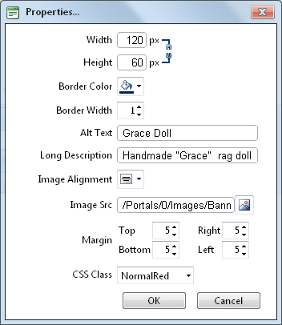

Setting Image Properties
How to set the optional properties of an image using the Image Manager of the TelerikEditorProvider for the RTE.
- If the image has already been inserted, right-click on the image and select the Properties... button. Alternatively, if you are currently adding the image, click on the Properties tab of the Image Manager.
- Click the Lock Ratio / Unlock Ratio button to unlock or lock the width/height ratio at any time. Unlocking the ratio enables the width and/or height to be modified independently.
- In the Width text box, enter the width in pixels which the image will be displayed as.
- In the Height text box, enter the height in pixels which the image will be displayed as.
- At Border Color, click the Color Picker button and select the border color. Note: A Border Width must be entered to display the border.
- In the Border Width text box, enter the pixel width for the border - OR - use the Increase and Decrease arrows.
- In the Alt Text text box, enter the alternative text for this image.
- In the Long Description text box, enter the long description for this image.
- At Image Alignment, click the Alignment Selector button and select the alignment for this image.
- At Margin, set any of these fields:
- In the Top text box, enter a pixel value or use the Increase and Decrease arrows to set the top margin.
- In the Bottom text box, enter a pixel value or use the Increase and Decrease arrows to set the bottom margin.
- In the Right text box, enter a pixel value or use the Increase and Decrease arrows to set the right margin.
- In the Left text box, enter a pixel value or use the Increase and Decrease arrows to set the left margin.
- At CSS Class, select a class for this image.
-
Click the OK button confirm.

Setting Image Properties